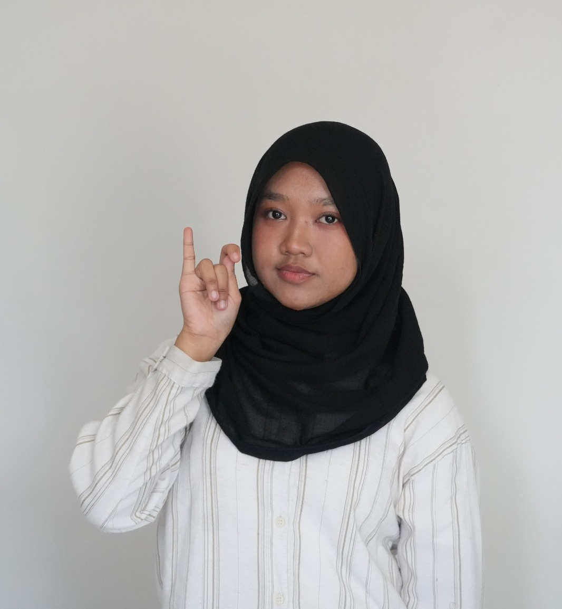

Information Systems student, bridging technology and business through design-driven thinking.
2nd Semester • Brawijaya University • Malang, Indonesia
2nd
Semester
3+
Personal Projects
∞
Curiosity

IS Student
Class of 2028
Academic Journey
Building a strong foundation.
Brawijaya University
2025 — Present • GPA: 3.95 / 4.0
Favourite Courses
SMA Negeri 2 Samarinda
Graduation Year 2024
Developed strong analytical and logical thinking skills, sparking a passion for technology and digital problem-solving.
What Drives Me
Three pillars shaping how I think about technology.
Crafting intuitive, human-centered interfaces that delight users and reduce friction, because great design is invisible.
Understanding organizational workflows and translating real-world business needs into smart, scalable technology solutions.
Building responsive, accessible front-ends using modern web technologies, and turning ideas into live, interactive experiences.